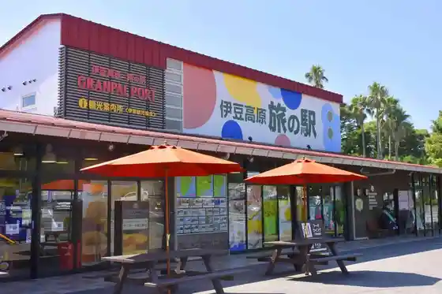
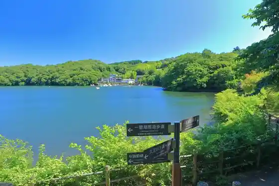
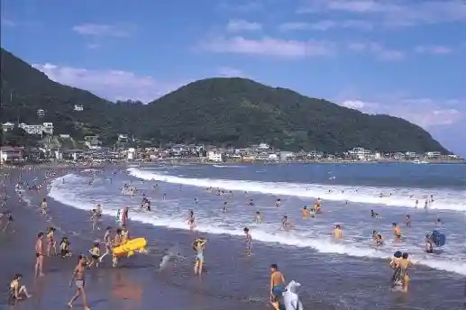

Izu Highlands Tabi no Eki
Ito, Shizuoka · 0557-51-1158 · Official / source link

Ippeki Mizumi
Ito, Shizuoka · 0557-37-6105 · Official / source link

Ito Orenji Beach
Ito, Shizuoka · 0557-37-6105 · Official / source link
Usami Beach
Ito, Shizuoka · 0557-37-6105 · Official / source link

Izu Tedibea Museum
Ito, Shizuoka · 0557-54-5001 · Official / source link
Roadside Station Ito Marintaun
Ito, Shizuoka · 0557-38-3811 · Official / source link
Nyuyokuranpu Museum & Furawa Garden
Ito, Shizuoka · 0557-51-1128 · Official / source link
Otonashi Shrine
Ito, Shizuoka · 0557-37-6105 · Official / source link
Omuro Yama
Ito, Shizuoka · 0557-51-0258 · Official / source link
Kawana Beach
Ito, Shizuoka · 0557-37-6105 · Official / source link
Tokai Kan
Ito, Shizuoka · 0557-36-2004 · Official / source link
Shirogasaki Coast
Ito, Shizuoka · 0557-37-6105 · Official / source link
Komuro Yama Park
Ito, Shizuoka · 0557-45-1444 · Official / source link
Izu Shaboten Dobutsu Park
Ito, Shizuoka · 0557-51-1111 · Official / source link
Izu Guranparu Park
Ito, Shizuoka · 0557-51-1122 · Official / source link